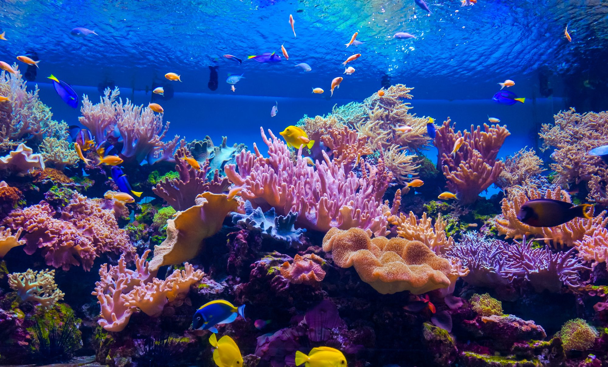

We aim to combat coral bleaching, overfishing, and coastal damage through raising awareness and providing an objective perspective on such dangers. In support of marine conservation, we encourage donation to the Coral Reef Alliance, Oceana, and the Stevo Marino.
With consistently rising temperatures due to climate change, the ocean temperatures have risen accordingly. This results in coral bleaching, a process whereupon coral expells its algae (known as 'Zooxanthellae'[1]), which is what gives the coral such striking tropical colouration. Such algae's provide the coral with food and energy via photosynthesis, and without these most coral variations starve. More than 14% of coral has been lost in less than a decade [2]. Its estimated that with the current projected rise of global temperatures by more than 2°C, 99% will be lost [3].
In 2016, 70% of the worlds reefs were damaged, some irreparably [4].
Covering only 0.1% of the world's ocean regions, coral is already in limited supply - and yet more than 25% of marine life is dependant on reefs[5]. Often called rainforests of the sea, these are precious and delicate organisms.
Its estimated the ocean produces between 50 and a staggering 80% of the world's oxygen [6]. Through carbon bleaching and massive ecosystem disruption, this could very soon change. Further air pollution poses huge health risks, not to mention the potential further environmental damage# that could cascade from such a loss.
For both humans and animals alike, the Oceans provide a huge variety of food. The ecosystem is vast - fish are a staple of many diets, and the interdependance within the ecosystem is crucial to environmental stability.
The ocean covers a huge 70% of the surface of the Earth [7]; and as such regulates the water cycle and many climate processes. These include: heat transfer, weather patterns, and even extreme weather events such as hurricanes. 98% of the heat from the Sun's rays is absorbed by the ocean and transferred across the planet [8].
Many ingredients and other medicinal materials are found in the ocean, including those helping treat arthiritis, heart disease, and even cancer [9].
Many advantages to human happiness can be correlated to the ocean. Many studies show nature has a direct impact on reducing stress, and mental and physical health are undeniably benefited by interacting with the natural world around us [8]. Even swimming is a very healthy process provided by the ocean, with breathing patterns releasing important hormones into our system. Even ocean sounds for meditation are often used with great results.
The oceans are an unmatched source of wildlife, growth, and thriving ecosystems. Its predicted the world's oceans contain between half a million and an incredible 10 million species - we have barely touched the surface [10]! In fact, more than 80% of the ocean remains unexplored [11].